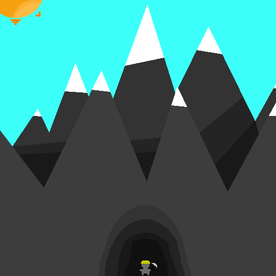
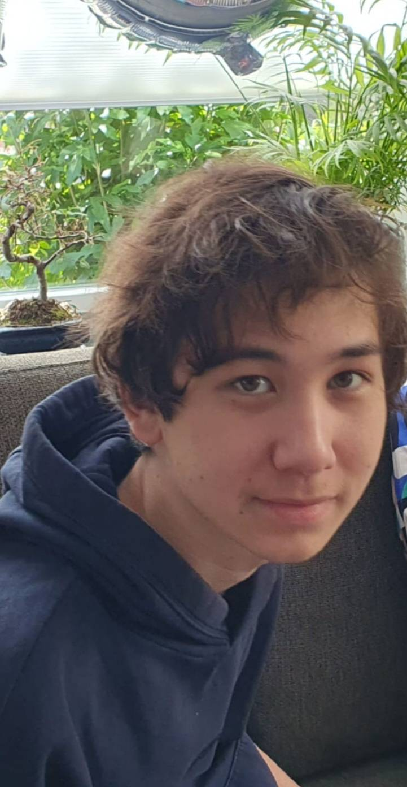

Latest Projects

- C#
- Unity
Rock gobblers
This is my solo project from year 3.
About Me
Hi I'm Paco van der Aar. im 18 years old, enjoy playing video games, drawing and walking alot. I am quite introverted but i still love talking alot with people. i am learning game development i work with C# and Unity. ive worked on several small projects and mostly focused on UI in unity and now im focusing more on gameplay, i would love to learn more coding languages so i have more knowledge on more than one aspect. i had a part time job as a waiter and have learned to work efficiently under pressure and comunicate not only with my co-workers in a positive way but also being able to communicate with customers so they are pleased with the service.
